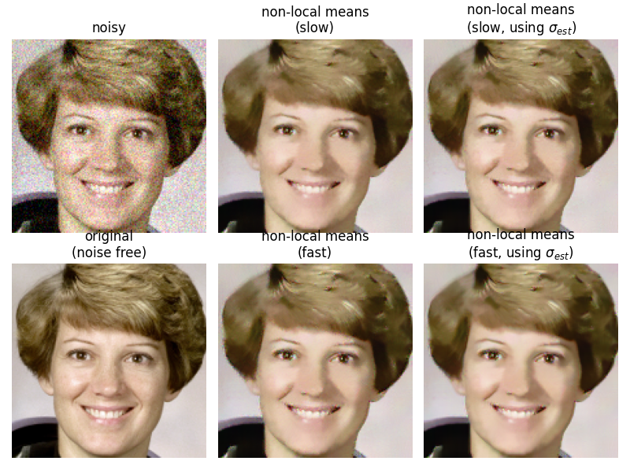

Note
Go to the end to download the full example code or to run this example in your browser via Binder
Non-local means denoising for preserving textures#
In this example, we denoise a detail of the astronaut image using the non-local means filter. The non-local means algorithm replaces the value of a pixel by an average of a selection of other pixels values: small patches centered on the other pixels are compared to the patch centered on the pixel of interest, and the average is performed only for pixels that have patches close to the current patch. As a result, this algorithm can restore well textures, that would be blurred by other denoising algorithm.
When the fast_mode argument is False, a spatial Gaussian weighting is
applied to the patches when computing patch distances. When fast_mode is
True a faster algorithm employing uniform spatial weighting on the patches
is applied.
For either of these cases, if the noise standard deviation, sigma, is
provided, the expected noise variance is subtracted out when computing patch
distances. This can lead to a modest improvement in image quality.
The estimate_sigma function can provide a good starting point for setting
the h (and optionally, sigma) parameters for the non-local means algorithm.
h is a constant that controls the decay in patch weights as a function of the
distance between patches. Larger h allows more smoothing between disimilar
patches.
In this demo, h, was hand-tuned to give the approximate best-case performance
of each variant.

estimated noise standard deviation = 0.0772704129952135
PSNR (noisy) = 22.16
PSNR (slow) = 29.35
PSNR (slow, using sigma) = 29.67
PSNR (fast) = 28.87
PSNR (fast, using sigma) = 29.27
import numpy as np
import matplotlib.pyplot as plt
from skimage import data, img_as_float
from skimage.restoration import denoise_nl_means, estimate_sigma
from skimage.metrics import peak_signal_noise_ratio
from skimage.util import random_noise
astro = img_as_float(data.astronaut())
astro = astro[30:180, 150:300]
sigma = 0.08
noisy = random_noise(astro, var=sigma**2)
# estimate the noise standard deviation from the noisy image
sigma_est = np.mean(estimate_sigma(noisy, channel_axis=-1))
print(f'estimated noise standard deviation = {sigma_est}')
patch_kw = dict(
patch_size=5, patch_distance=6, channel_axis=-1 # 5x5 patches # 13x13 search area
)
# slow algorithm
denoise = denoise_nl_means(noisy, h=1.15 * sigma_est, fast_mode=False, **patch_kw)
# slow algorithm, sigma provided
denoise2 = denoise_nl_means(
noisy, h=0.8 * sigma_est, sigma=sigma_est, fast_mode=False, **patch_kw
)
# fast algorithm
denoise_fast = denoise_nl_means(noisy, h=0.8 * sigma_est, fast_mode=True, **patch_kw)
# fast algorithm, sigma provided
denoise2_fast = denoise_nl_means(
noisy, h=0.6 * sigma_est, sigma=sigma_est, fast_mode=True, **patch_kw
)
fig, ax = plt.subplots(nrows=2, ncols=3, figsize=(8, 6), sharex=True, sharey=True)
ax[0, 0].imshow(noisy)
ax[0, 0].axis('off')
ax[0, 0].set_title('noisy')
ax[0, 1].imshow(denoise)
ax[0, 1].axis('off')
ax[0, 1].set_title('non-local means\n(slow)')
ax[0, 2].imshow(denoise2)
ax[0, 2].axis('off')
ax[0, 2].set_title('non-local means\n(slow, using $\\sigma_{est}$)')
ax[1, 0].imshow(astro)
ax[1, 0].axis('off')
ax[1, 0].set_title('original\n(noise free)')
ax[1, 1].imshow(denoise_fast)
ax[1, 1].axis('off')
ax[1, 1].set_title('non-local means\n(fast)')
ax[1, 2].imshow(denoise2_fast)
ax[1, 2].axis('off')
ax[1, 2].set_title('non-local means\n(fast, using $\\sigma_{est}$)')
fig.tight_layout()
# print PSNR metric for each case
psnr_noisy = peak_signal_noise_ratio(astro, noisy)
psnr = peak_signal_noise_ratio(astro, denoise)
psnr2 = peak_signal_noise_ratio(astro, denoise2)
psnr_fast = peak_signal_noise_ratio(astro, denoise_fast)
psnr2_fast = peak_signal_noise_ratio(astro, denoise2_fast)
print(f'PSNR (noisy) = {psnr_noisy:0.2f}')
print(f'PSNR (slow) = {psnr:0.2f}')
print(f'PSNR (slow, using sigma) = {psnr2:0.2f}')
print(f'PSNR (fast) = {psnr_fast:0.2f}')
print(f'PSNR (fast, using sigma) = {psnr2_fast:0.2f}')
plt.show()
Total running time of the script: (0 minutes 1.949 seconds)